第06讲 注意力机制与 Transformer
一、注意力机制：从心理学到机器学习
1.1 随意线索与不随意线索
心理学研究表明，生物的视觉系统并不是对视野中的一切平均用力，而是有选择地聚焦。注意力来自两类线索：
- 不随意线索：物体本身的突出性吸引你——桌上红色杯子在一堆灰书里格外显眼，你的目光不自觉地被它抓走；
- 随意线索：任务目标主动引导你——你想读一本书，于是注意力有意识地落在书上，对周围视而不见。
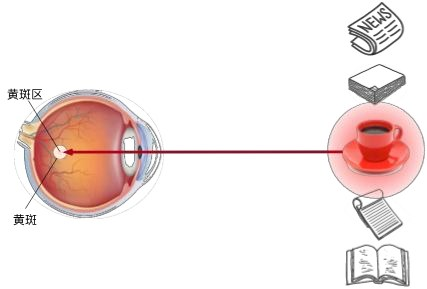
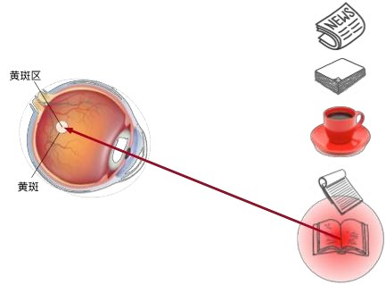
1.2 查询、键与值
把两类线索翻译成机器学习语言：此前学的卷积、全连接、池化层都只用了"不随意线索"——输入什么就处理什么，一视同仁。注意力机制首次把"随意线索"引入网络：
- 查询（query）：随意线索——"我现在想找什么"；
- 键（key）：每个输入自带的"标签"——不随意线索，用来和查询比对；
- 值（value）：每个输入真正的内容。
注意力计算 = 用 query 逐个与 key 比对相似度 → 得到一组权重 → 对 value 做加权平均。相似度高的输入获得更多关注，这就是注意力池化（attention pooling）。
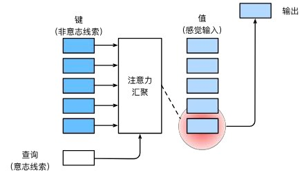
二、注意力池化：从非参数到参数化
2.1 非参数方案：Nadaraya-Watson 核回归
最简单的注意力池化甚至不需要学参数。给定数据 \((x_i, y_i)\)，要对查询 \(x\) 做预测：平均池化直接取 \(\frac{1}{n}\sum y_i\) 太粗糙；60 年代提出的 Nadaraya-Watson 核回归按"距离越近权重越大"加权：
其中 \(-\frac{1}{2}(x-x_i)^2\) 来自高斯核 \(K(u)=\frac{1}{\sqrt{2\pi}}\exp(-\frac{u^2}{2})\)。把式子拆开看：\(x\) 是 query，\(x_i\) 是 key，\(y_i\) 是 value——核回归就是最早的注意力池化：离查询越近的样本，其值被采纳得越多。
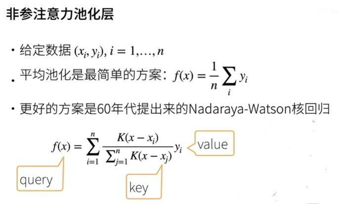
2.2 参数化注意力：引入可学习的 w
非参数方案的权重完全由距离决定，不够灵活。在注意力分数里引入可学习参数 \(w\)，让模型自己学会"什么样的相似才重要"：
多了参数 \(w\)，模型就能通过训练调整不同特征维度的重要程度——这是从"核回归"走向"可学习注意力"的第一步。
2.3 注意力分数的两种主流设计
query 与 key 的"相似度"称为注意力分数（attention score），分数经 softmax 归一化就是注意力权重。两种最常用的分数函数：
| 分数函数 | 公式 | 特点 |
|---|---|---|
| 加性注意力 | \(a(\mathbf{q}, \mathbf{k}) = \mathbf{w}_v^\top \tanh(W_q \mathbf{q} + W_k \mathbf{k})\) | query 和 key 维度可以不同；有一个小 MLP，表达力强 |
| 缩放点积注意力 | \(a(\mathbf{q}, \mathbf{k}) = \mathbf{q}^\top \mathbf{k} / \sqrt{d_k}\) | 只需一次矩阵乘法，快；要求 q、k 同维；除以 \(\sqrt{d_k}\) 防止分数过大导致 softmax 饱和 |
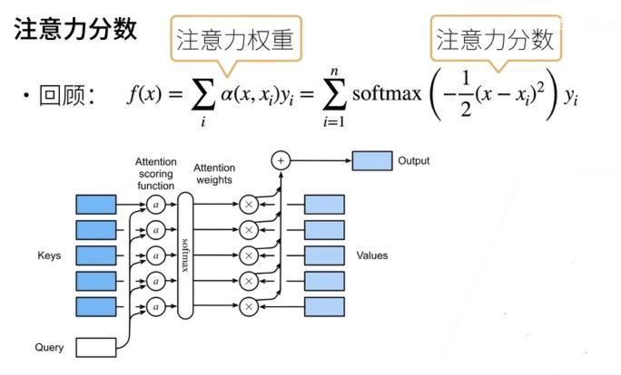
三、Seq2Seq 中的注意力
3.1 动机：翻译时该"看"哪里？
编码器—解码器（seq2seq）模型做机器翻译时，编码器把整句源语压缩成一个固定向量，解码器只凭这一个向量逐词生成译文。问题在于：生成每个目标词时，真正相关的往往只是源句中的某几个词——翻"hello world → bonjour le monde"时，生成"bonjour"主要该看"hello"：
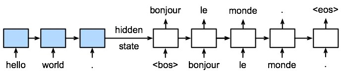
一个向量装不下长句的全部细节，也无法表达"当前该对齐源句哪个位置"。注意力机制正好补上这一课。
3.2 加入注意力的 seq2seq
Bahdanau 等人 2014 年的经典方案：
- 编码器 RNN 每个时间步的输出都保留下来，作为 key 和 value（一座"记忆库"）；
- 解码器 RNN 上一时刻的隐含状态作为 query；
- 每个解码时刻做一次注意力池化，从记忆库中取出"此刻最相关"的源句信息，与当前词的嵌入拼接后再送入解码器 RNN。
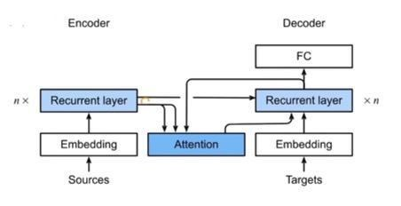
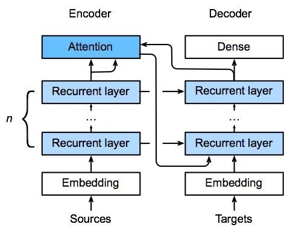
四、自注意力（Self-Attention）
4.1 自己关注自己
注意力不一定是"一个序列查询另一个序列"。把同一个序列的每个位置同时复制成 query、key、value 三份，让每个位置都去关注整个序列——这就是自注意力：
给定序列 \(\mathbf{x}_1, \ldots, \mathbf{x}_n\)，自注意力输出等长的 \(\mathbf{y}_1, \ldots, \mathbf{y}_n\)，每个 \(\mathbf{y}_i\) 都融合了全序列与 \(\mathbf{x}_i\) 最相关的信息。例如句子"动物没有过河，因为它太累了"中，"它"的表示可以从"动物"处获得大权重——指代关系被自动建立。
4.2 与 CNN、RNN 对比
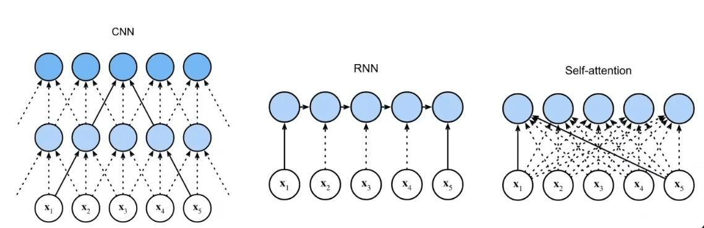
| CNN | RNN | 自注意力 | |
|---|---|---|---|
| 计算复杂度（每层） | \(O(k \cdot n \cdot d^2)\) | \(O(n \cdot d^2)\) | \(O(n^2 \cdot d)\) |
| 并行度 | \(O(n)\) | \(O(1)\)（必须串行） | \(O(n)\) |
| 最长路径 | \(O(n/k)\) | \(O(n)\) | \(O(1)\) |
"最长路径"指序列中任意两个位置交换信息要经过多少步——它决定了长距离依赖的难易。自注意力任意位置一步可达、又可全并行，代价是 \(O(n^2)\) 的计算量（序列特别长时成为瓶颈）。
4.3 动手试一试：缩放点积注意力
拖动三个 key 与 query 的相似度，观察 softmax 权重如何分配、输出如何成为 value 的加权组合；再调大维度 \(d_k\)，看缩放因子的作用：
五、Transformer：完全建立在注意力上的架构
5.1 总体架构
2017 年，Google 的论文《Attention Is All You Need》提出 Transformer——干脆彻底抛弃循环与卷积，只用注意力搭建编码器—解码器。与 seq2seq+注意力相比，注意力在 Transformer 中出现在三个地方：
- 编码器自注意力：源句内部互相关注，理解上下文；
- 解码器自注意力：已生成的目标词互相关注（带掩码，不能偷看未来）；
- 编码器—解码器注意力：解码器拿 query 去查询编码器的输出（对齐源句）。
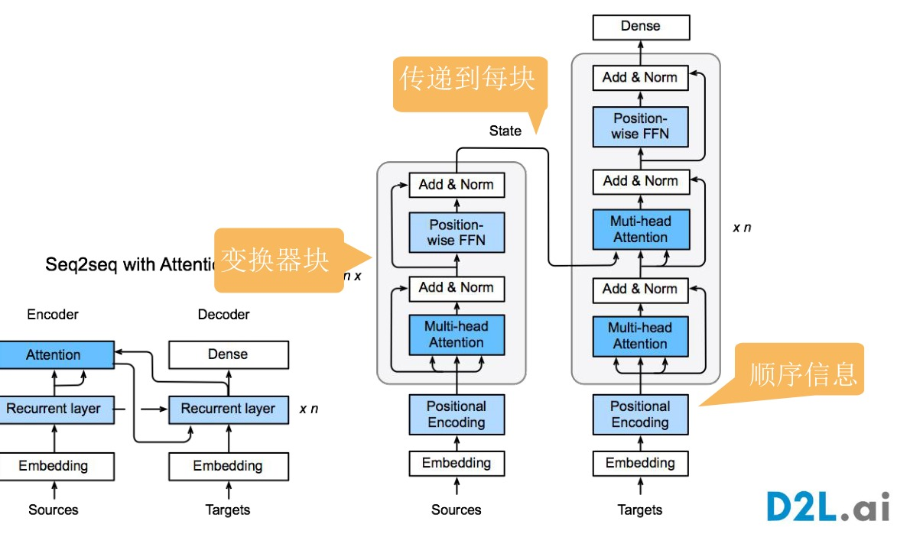
5.2 多头注意力
一次注意力只能在一个表示空间里找相似。多头注意力（multi-head attention）把 query、key、value 用 \(h\) 组不同的线性投影变换到 \(h\) 个子空间，各自独立做注意力，再把结果拼接投影：
5.3 位置前馈网络
每个注意力块里还有一个位置前馈网络（Position-wise FFN）：对每个位置独立地过同一个两层 MLP（等价于两个 \(1 \times 1\) 卷积）。注意力负责"混合"位置间的信息，FFN 负责在每个位置上做非线性变换——两者分工明确。
5.4 残差连接与层归一化（Add & Norm）
每个子层外面都包着"Add & Norm"：残差连接（输出 = 子层输出 + 原始输入，保证深层堆叠时梯度畅通）加层归一化（LayerNorm）：
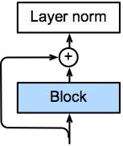
5.5 位置编码：把顺序"注入"模型
自注意力有个先天缺陷：它本身不含任何顺序信息——把句子打乱，每个位置的输出只是跟着词走，模型分不清谁先谁后（数学上称为置换不变性）。解决办法是给每个位置手工构造一个"位置签名"加到嵌入上：
第 \(i\) 个位置、第 \(2j\) 维是 sin、第 \(2j+1\) 维是 cos，不同维度频率不同：低维变化快（区分邻近位置），高维变化慢（标记长距离）。输出 = 词嵌入 \(X\) + 位置编码 \(P\)，顺序信息就这样"混进"了表示。
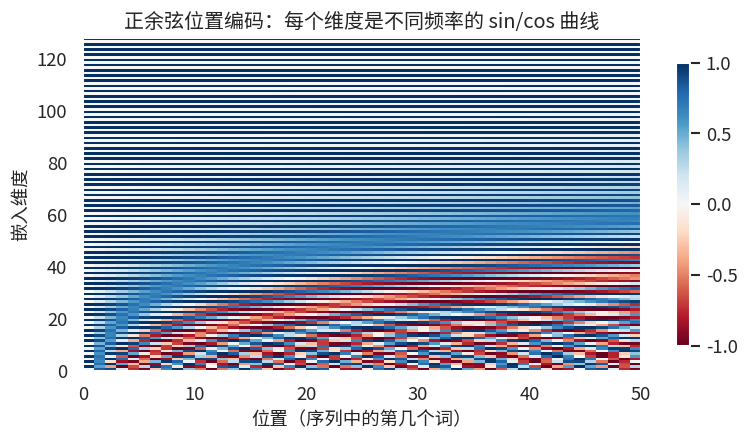
5.6 预测时的掩码
训练解码器时有个陷阱：如果自注意力能看到整个目标序列，第 \(t\) 个位置就能"偷看"答案 \(x_t\) 本身——模型学会抄答案而非预测。解决办法是掩码（mask）：时刻 \(t\) 的 query 只允许关注 \(1 \sim t\) 的 key/value，未来位置的注意力分数被置为 \(-\infty\)（softmax 后权重为 0）。
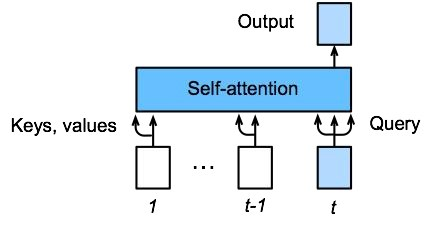
六、BERT：预训练时代的开幕
6.1 NLP 中的迁移学习
计算机视觉早已习惯"预训练 + 微调"：用在 ImageNet 上练好的网络提取特征，新任务只训一个小分类头。NLP 也想走这条路，但早期的词向量（word2vec）有两个短板：忽略顺序信息，且同一个词在任何语境下向量都一样（"苹果"不分水果和公司）。
6.2 BERT 的动机与架构
2018 年 Google 提出 BERT（Bidirectional Encoder Representations from Transformers）：拿 Transformer 的编码器（没有解码器），在超过 30 亿单词的书籍和维基百科语料上预训练，让模型充分吸收语言知识；下游任务只需在顶部加一个简单的输出层做微调：
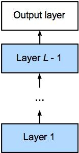
| 版本 | Transformer 块数 | 隐含大小 | 注意力头数 | 参数量 |
|---|---|---|---|---|
| BERT-Base | 12 | 768 | 12 | 1.1 亿 |
| BERT-Large | 24 | 1024 | 16 | 3.4 亿 |
因为编码器是双向的（每个位置能看到整句），BERT 的上下文表示远优于单向语言模型，一经发布就横扫 11 项 NLP 基准任务。它的预训练任务也颇有创意——掩码语言模型（随机遮住 15% 的词让模型猜，类似完形填空）和下一句预测。
七、本讲小结与自测
7.1 知识要点回顾
| 主题 | 必须掌握的内容 |
|---|---|
| 注意力的三个角色 | query（随意线索）、key（比对标签）、value（内容）；注意力 = 加权汇聚 |
| 注意力池化 | Nadaraya-Watson 核回归是最早的非参数注意力；参数化引入可学习 \(w\) |
| 分数函数 | 加性注意力（可不同维）vs 缩放点积（快，除以 \(\sqrt{d_k}\) 防饱和） |
| seq2seq+注意力 | 编码器每步输出作 key/value，解码器状态作 query；解决固定向量瓶颈与对齐 |
| 自注意力 | 同一序列充当 q/k/v；任意位置一步直达、全并行；复杂度 \(O(n^2 d)\) |
| Transformer | 三处注意力；多头 = 多角度并行关注；FFN 逐位置变换；Add & Norm；位置编码注入顺序；解码器因果掩码 |
| BERT | Transformer 编码器 + 掩码语言模型预训练 + 微调；Base 1.1 亿/Large 3.4 亿参数 |